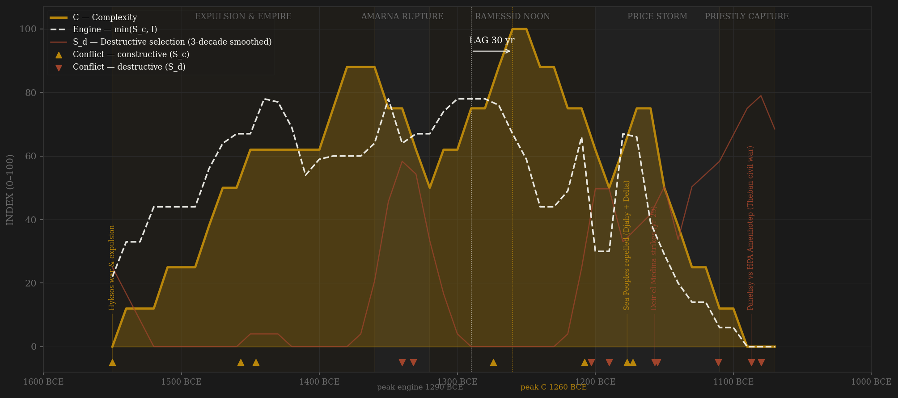
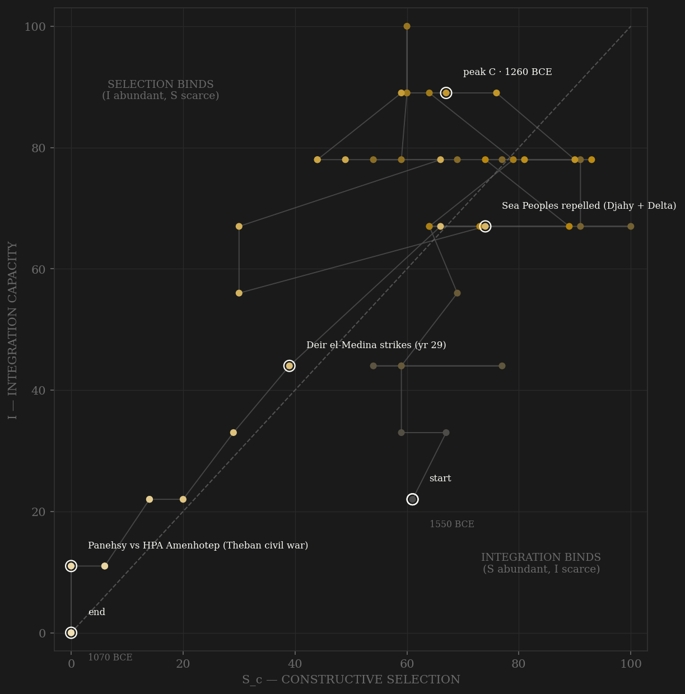

The arc opens with a war meritocracy: Ahmose son of Ebana's autobiography — crewman to commander, gold of valor seven times — is the founding document of channel A, and the ladder it describes eventually runs all the way up: Horemheb (scribe-soldier) and Ramesses I (a troop commander's son) are two successive non-royal accessions to the throne itself. The engine's first plateau is Thutmoside (Megiddo 1457, the Euphrates crossed 1446); its frozen peak is the second, early-Ramesside plateau — Seti I and young Ramesses II, when the schools churned 'be a scribe' propaganda, a provincial Hathor priest could still be handed the High Priesthood of Amun by royal oracle (Nebwenenef, year 1), and Bakenkhonsu's statue could list a 58-year climbable cursus from schoolboy to pontiff. Complexity peaks one generation later, in the 1260s–1250s: Abu Simbel dedicated, the Kadesh Poem circulating, the love-poetry and wisdom corpus at maximum, Deir el-Medina cutting its finest tombs — lag +30, in-window. Amarna sits mid-arc as the great within-rules reform that turned destructive at the edges: the restructuring was a legitimate royal instrument (channel C), but the temple closures and nationwide erasure of Amun amputated the state's own redistributive-symbolic machinery (S_d by locus — the temple-granary complex WAS state logistics). Then the long fall, in the exact H-RENT-001 shape: from Ramesses IV the High Priesthood hereditizes under Ramessesnakht's family; in 1157 the state fails to pay its own tomb-builders and history's first recorded strike sits in the Turin papyrus; the grain price storm of Dynasty 20 (Janssen's ostraca series, measured off dated potsherds) peaks under Ramesses VII at four to eight times the old baseline; the necropolis guardians rob the necropolis and leave the trial transcripts; and by 1080 a general-priest writes his name in cartouches while the real king asks, in a surviving letter, whose master Pharaoh still is.

The trajectory climbs both axes out of the Hyksos war, riding integration hard — the granary-tribute-Nubian-gold machine peaks under Amenhotep III (Malkata, the jubilee logistics, gold 'as dust') while contestability is still high, so the path hugs the diagonal through the empire's noon. Amarna knocks integration sideways without killing selection — the reform elite was radically open ('I was one poor of family; the ruler built me up') even as the iconoclasm bled S_d. The Ramesside restoration re-inflates both axes for the second noon. The death is one-sided and slow: from the 1150s the path slides down the SELECTION axis first — hereditization of office, oracles replacing contest — with integration following as Nubia's gold is lost and the pay system fails; the polity dies in the integration-binds corner, the priesthood holding a captured, shrunken machine. That order — S_c decays first, I follows, C last — is the rentier sequence the sealed preregs describe; noted here, not tested (pooled tests stay sealed).
Coded by locus and target, never by outcome. Egypt's ledger holds two showcase entries almost no other ancient polity can match: the state's own trial paper survives. The strikes of 1157 (Turin Strike Papyrus: 'we are hungry' — rations two months late for the crown's own tomb-crew) and the harem conspiracy of 1155 (Judicial Papyrus of Turin: 38 condemned; the 2012 CT scan found the cut throat) are S_d documented by the machinery that was being attacked. The Sea Peoples 1177 stays channel B by the Hannibal rule: while Hatti and Ugarit burned, Egypt's levy-fleet-fortress machinery demonstrably functioned and the frontier held — repulse is the machinery's proof, not its wound. Amarna is split, not averaged: the reform contest is channel C; its enforcement purges are S_d.
| YEAR | CONFLICT | CODE | CODING RATIONALE |
|---|---|---|---|
| 1550 BCE | Hyksos war & expulsion | Sc | Founding external contest vs Avaris; Theban machinery intact through its own war — B, Hannibal rule at founding |
| 1457 BCE | Megiddo (Thutmose III yr 23) | Sc | First exactly-documented battle in history; peer contest for Syria opens the annual-campaign system (separate ledger row; phase annotation carried by adjacent key markers) |
| 1446 BCE | Euphrates crossing vs Mitanni | Sc | Yr 33: boats hauled overland, Mitanni struck at home — peak Dyn 18 peer rivalry |
| 1340 BCE | Amarna iconoclasm | Sd | Amun erased nationwide, temples closed — the state amputating its own redistributive-symbolic machinery (the reform contest itself is channel C; the enforcement purge is S_d). Separate ledger row; the AMARNA RUPTURE phase band carries the arc annotation and the Sea Peoples marker carries the shared phase-portrait row |
| 1332 BCE | Post-Amarna counter-purge | Sd | Restoration Stele is the state's own damage report; damnatio of the Amarna kings — bloodless proscription, Yuanyou precedent |
| 1274 BCE | Kadesh | Sc | The age's greatest chariot collision, fought in Syria; rivalry later priced into the 1259 silver-tablet treaty (separate ledger row; the noon is marked by the peak-C marker itself) |
| 1208 BCE | Perire (Libyan–Sea Peoples coalition) | Sc | Meryre's coalition crushed at the western frontier; Merneptah Stele commemorates |
| 1203 BCE | Amenmesse rival kingship | Sd | Rival king seizes Thebes and Nubia against Seti II; officials purged; the house of Ramesses breaks |
| 1190 BCE | The 'empty years' (Bay, Twosret, Setnakhte) | Sd | P. Harris I: 'the land cast adrift'; kingmaker Bay executed (O. IFAO 1864); usurpation funded by plundering temple gold |
| 1177 BCE | Sea Peoples repelled (Djahy + Delta) | Sc | Land AND naval battles won at the frontier while Hatti/Ugarit burned — machinery demonstrably functioned: B by the Hannibal rule |
| 1173 BCE | Meshwesh war (yr 11) | Sc | Second Libyan invasion broken; captives branded and enrolled |
| 1157 BCE | Deir el-Medina strikes (yr 29) | Sd | First recorded labor strike in history (Turin Strike Papyrus): the state fails to pay its own coordination workers — S_d symptom with surviving paper |
| 1155 BCE | Harem conspiracy vs Ramesses III | Sd | Judicial Papyrus of Turin: 38 condemned; CT-confirmed cut throat — regicide from inside the palace (separate ledger row, one arc annotation: -1157 carries the key) |
| 1111 BCE | Great Tomb Robberies & trials | Sd | Abbott/Leopold II-Amherst papyri: royal tombs opened, West-Theban officials implicated — the guardians consuming the necropolis: institutional self-cannibalization (separate ledger row; death-corner annotation carried by the Panehsy marker) |
| 1087 BCE | Panehsy vs HPA Amenhotep (Theban civil war) | Sd | The state's frontier army besieges the state's chief priest inside the core; Hardai sacked; 'the year of the hyenas' — famine and civil war together |
| 1080 BCE | Wehem mesut partition | Sd | The 'renaissance' that was a partition: Herihor's cartouches at Thebes, Smendes at Tanis, Nubia and its gold lost to Panehsy |
| COMPONENT | GRADE | BASIS |
|---|---|---|
| S_c — A: Elite-entry (0.40) | ○ scholar-coded | The army route (Ahmose son of Ebana's autobiography; commoner generals; Horemheb + Ramesses I = two non-royal accessions), the scribal route (Miscellanies school corpus; Amenhotep son of Hapu), and the priestly route's capture: HPA royal-appointed Dyn 18–19 (Hapuseneb, Nebwenenef by oracle yr 1; Bakenkhonsu's 58-yr cursus on his Munich statue) → hereditized from Ramessesnakht under R IV → Herihor's cartouches. Deir el-Medina as documented microcosm (Černý 1973; McDowell 1999). The decay arc IS the H-RENT-001 shape — coded, not measured |
| S_c — B: Peer rivalry (0.30 hard cap) | ○ coded chronology | Hyksos expulsion; Thutmoside Syrian system (Megiddo 1457 epigraphically dated); Mitanni then Hittite contest (Kadesh 1274 → treaty 1259); Perire 1208; Ramesses III's Libyan wars + Sea Peoples 1177 (B by Hannibal rule — frontier held, machinery functioned). Late Libyan raids score low-B; disruption loads on E/S_d. Chronology: Spalinger 2005, Morris 2005, Kitchen 1982 |
| S_c — C: Within-rules contest (0.30) | ○ scholar-coded | Co-regency management (Hatshepsut/Thutmose III: apex contest absorbed without purge or war), Dream-Stele legitimation, temple-crown bargaining while the crown held the whip, Amarna reform-as-contest (enforcement purges excluded → S_d), Horemheb's Great Edict. Dies into oracular governance late Dyn 20 — Amun's nod replaces council |
| S_d — Destructive | ○ coded · event-documented | Uniquely for deep antiquity, trial paper survives: Turin Strike Papyrus 1157 (Edgerton JNES 10), Judicial Papyrus of Turin 1155 (+ BMJ 2012 CT study), tomb-robbery dossier c.1111 (Peet 1930), O. IFAO 1864 (Bay), Late Ramesside Letters (Panehsy war, 'year of the hyenas'). Events documented; decade ordinals judged |
| I — Integration | ○ + ◐ cells | Kemp's provider-state backbone (temple-granary logistics, Nubian gold, tribute) ○ coded; ◐ where countable corpora carry: Sinai/Wadi Hammamat expedition inscriptions (Gardiner/Peet/Černý; Couyat-Montet; Hikade 2001 — R IV yr 3: 8,368 men, 900 dead on the stela; system stops after R VI), and Deir el-Medina ration-payment regularity (Janssen 1975) as redistribution performance |
| C — Complexity | ○ scholar-coded | Monument arc (Karnak hypostyle → Abu Simbel → Medinet Habu the last great temple), Deir el-Medina output + crew size (120 under R IV → 60 under R VI, Černý), Dyn 19 literary peak (Kadesh Poem, P. Chester Beatty I love poetry, wisdom texts), imperial reach (Morris 2005) |
| R — Renewal | ○ two-anchor interpolation | Butzer 1976: ~3M (1550) → ~4.5M (Ramesside peak) → gentle late decline. Millions, raw; shape assumed between anchors, flagged in SOURCES.md |
| E — Entropy | ◐ Dyn 20 window · ○ elsewhere | The Janssen 1975 grain-price arc measured off dated ostraca: stable ~1–2 deben/khar through Dyn 19, climb from late R III, PEAK under R VII (~4–8× baseline, spot ~11–12), partial easing after. One state-provisioned village = national proxy caveat carried in SOURCES.md. Plague (Amarna letters, Hittite plague prayers), strike waves, robbery epidemic, 1087 famine-war ○ coded |
49 decade rows -1550..-1070 built straight-to-v2 by scripts/build_egypt_nk_sicre.py (no v1 page ever existed; Sc_v1_combat = channel B alone, the prior definition's operative content, per references/v2-contestability-build.md). Channels 0.40/0.30/0.30, amendment defaults, no deviation; ledger data/raw/egypt_nk/coding_ledger_v2.csv; audit components_audit.csv. Frozen-protocol lag (3-decade centered rolling mean, engine=min(Sc,I)) under BOTH definitions: v2 engine -1290 → C -1260 = +30 PASS; v1 engine -1280 → C -1260 = +20 PASS — the definitions agree. SENSITIVITY (two-plateau engine): the Thutmoside (-1440s) and early-Ramesside (-1290s) plateaus sit within ordinal resolution (smoothed 74 vs 78); UNSMOOTHED idxmax lands on -1440 under both definitions, stretching the lag to +180 LONG. The frozen verdict is the verdict of record; the sensitivity is shown, not hidden. Chronology = Shaw OHAE low chronology; absolute dates pre-1250 carry ±10–25yr systematic uncertainty (grid placement robust within the chronology, not across chronologies). ○-halo caveat applies: scholar-coded S and C share historiographic sources. Rebuild: build_egypt_nk_sicre.py, then polity_report.py --slug egypt_nk